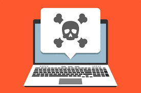
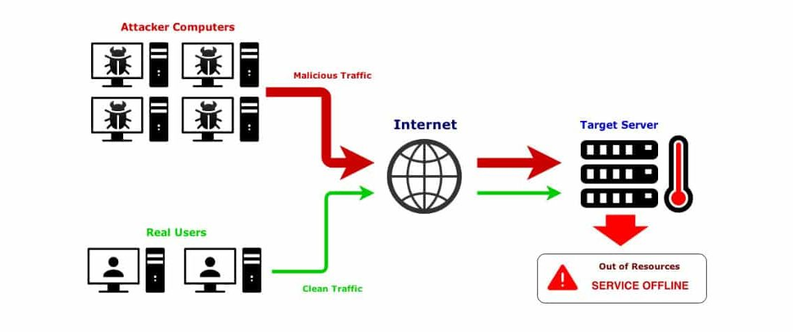

PERTEMUAN 14
Keamanan Sistem Operasi

Pengertian Keamanan Sistem Operasi
Istilah keamanan sistem operasi atau OS mengacu pada praktik dan tindakan yang dapat memastikan kerahasiaan, integritas, dan ketersediaan atau CIA (Confidentiality, Integrity, Availability) sistem operasi.
Tujuan keamanan sistem operasi adalah untuk melindungi OS dari berbagai ancaman, termasuk perangkat lunak berbahaya seperti worm, trojan, dan virus lainnya, kesalahan konfigurasi, serta intrusi jarak jauh.
Keamanan sistem operasi biasanya melibatkan penerapan teknik kontrol seperti penggunaan perangkat lunak antivirus, pembaruan patch OS secara berkala, firewall untuk memantau lalu lintas jaringan, serta pengaturan hak akses pengguna.
Keamanan OS mencakup seluruh prosedur kontrol preventif yang melindungi aset sistem dari pencurian, penghapusan, atau modifikasi tidak sah yang dapat terjadi akibat pelanggaran keamanan.
Ancaman Keamanan Sistem Operasi
Setelah memahami pengertian keamanan sistem operasi, penting untuk mengetahui berbagai ancaman yang dapat menyerang sistem operasi seperti Windows, macOS, Linux, BSD, dan sistem lainnya.
Ancaman Malware
Malware adalah perangkat lunak berbahaya yang mencakup virus, worm, trojan, dan rootkit. Malware dapat masuk ke sistem tanpa persetujuan pengguna atau menyamar sebagai aplikasi yang sah.
Tujuan malware antara lain mencuri data, merusak sistem, atau mengambil alih kendali perangkat. Dalam beberapa kasus, malware juga membentuk botnet untuk melakukan serangan DDoS.
Serangan Denial of Service (DoS)
Serangan DoS bertujuan membuat sistem tidak dapat melayani permintaan pengguna sah dengan membanjiri sistem menggunakan permintaan palsu.
Serangan DoS modern sering dilakukan secara terdistribusi (DDoS) menggunakan ribuan perangkat yang telah terinfeksi malware, sehingga sangat sulit dihentikan.
Intrusi Jaringan

Intrusi jaringan terjadi ketika pihak tidak berwenang berhasil memperoleh akses ke sistem. Intrusi dapat dilakukan oleh orang dalam maupun pihak eksternal.
Bentuk intrusi meliputi penyalahgunaan hak akses, pencurian kredensial, hingga pengambilalihan sistem secara tersembunyi.
Buffer Overflow

Buffer overflow terjadi ketika data yang dimasukkan melebihi kapasitas buffer sehingga menimpa area memori lain yang penting.
Kerentanan ini sering dimanfaatkan penyerang untuk menyisipkan kode berbahaya yang dapat mengambil alih sistem.
Upaya Pengamanan Sistem Operasi
Untuk menjaga keamanan sistem operasi, diperlukan berbagai langkah pengamanan yang diterapkan secara berkelanjutan.
-
Autentikasi dan Otorisasi
Penggunaan username, password, serta autentikasi multi-faktor untuk membatasi akses pengguna. -
Update dan Patch Sistem
Pembaruan sistem operasi secara rutin untuk menutup celah keamanan yang ditemukan. -
Firewall dan Antivirus
Digunakan untuk memantau lalu lintas jaringan dan mencegah masuknya perangkat lunak berbahaya. -
Manajemen Hak Akses
Penerapan prinsip least privilege agar pengguna hanya memiliki hak sesuai kebutuhannya.
Kesimpulan
Keamanan sistem operasi merupakan aspek krusial dalam menjaga stabilitas, keandalan, dan perlindungan data pada sistem komputer.
Dengan memahami berbagai ancaman serta menerapkan mekanisme pengamanan yang tepat, sistem operasi dapat beroperasi secara aman dan optimal dalam menghadapi tantangan keamanan modern.